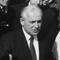
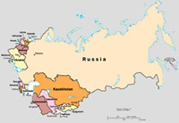
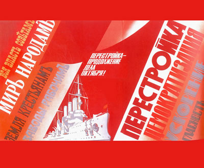
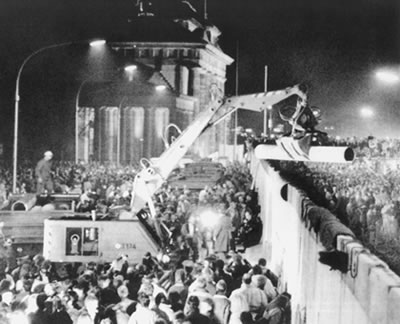
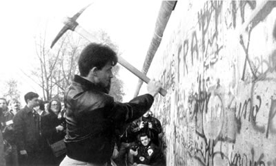
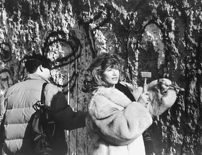
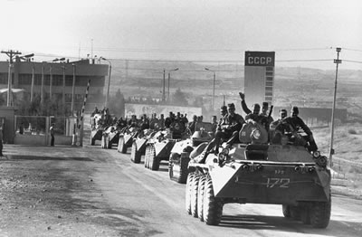
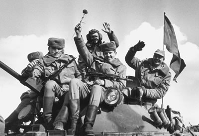
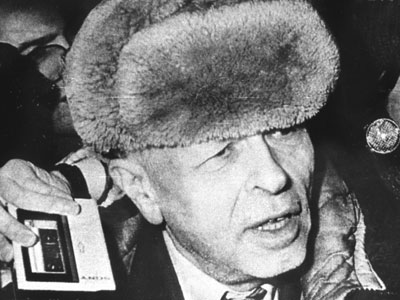
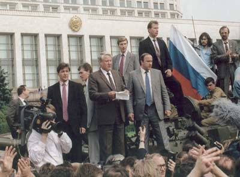

Online Exhibit → After the Soviet Union
The Fall of the Soviet Union

In 1985, Mikhail Gorbachev became the Soviet leader and started a process of reforming the Soviet Union that would eventually result in its collapse. Faced with an economic crisis and seeking better relations with the West, Gorbachev withdrew Soviet troops from Afghanistan, engaged in a series of arms control talks with the United States and closed the remaining labor camps for political prisoners.

In 1989, Gorbachev chose not to use force to quell the popular uprisings in Eastern Europe, allowing the Berlin Wall to fall and ending Soviet domination of Eastern Europe. Two years later, Gorbachev presided over the final dissolution of the Soviet Union.


- Perestroika—Reconstruction
- Demokratizatsiia—Democratization
- Uskorenie—Acceleration
- Glasnost—Openness
These key slogans for Gorbachev’s economic and political reforms, much like Khrushchev’s earlier reforms, are presented in this poster as a return to the true spirit of the October 1917 revolution. Gorbachev’s reforms went much further than Khrushchev’s, including the limited introduction of a market economy and some private property, reductions in official censorship, and the introduction of some competitive elections in politics.
Destruction of the Berlin Wall, 1989. Since the end of World War II, Germany stood divided between East and West. The city of Berlin, located inside East Germany, also stood divided. In 1961 the Communist government of East Germany formalized the division by building the Berlin Wall. The Wall symbolized the Cold War and its destruction in 1989 symbolized the end of the Cold War.






These images are from a news-reel showing the destruction of the Berlin Wall.
Courtesy of the ITAR-TASS News Agency.



These images are from a news-reel showing the withdrawal of Soviet troops from Afghanistan, 1988. From 1979 to 1988, Soviet troops fought a bloody war in Afghanistan to support the country’s failing pro-Soviet regime.
Courtesy of the ITAR-TASS News Agency.

Andrei Sakharov
Physicist and human rights activist. Winner of the Nobel Peace Prize. Speaking as a delegate to the Congress of People’s Deputies—the first Soviet parliament with democratically elected representatives. Late 1980s. Only a few years before, Sakharov was still under house arrest in Gorky.


Boris Yeltsin (holding papers), the first Russian President, surrounded by defenders of the Russian government headquarters during the failed hard-line Communist coup attempt on August 19, 1991.
Online Exhibit | Reflections | Traveling Exhibit | Teacher Resources | About
© 2006–2021, Center for History and New Media, George Mason University.